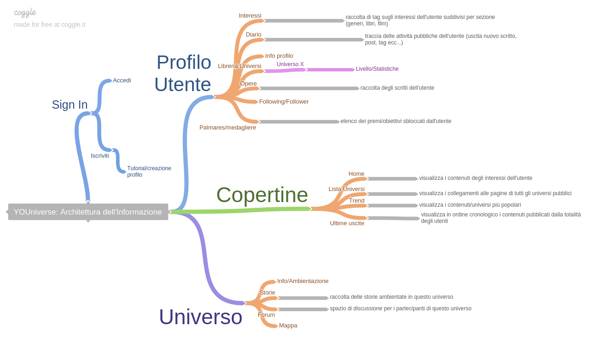
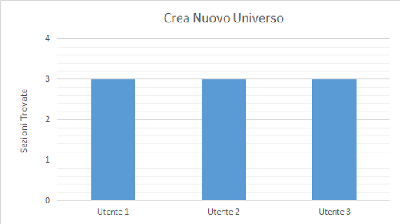
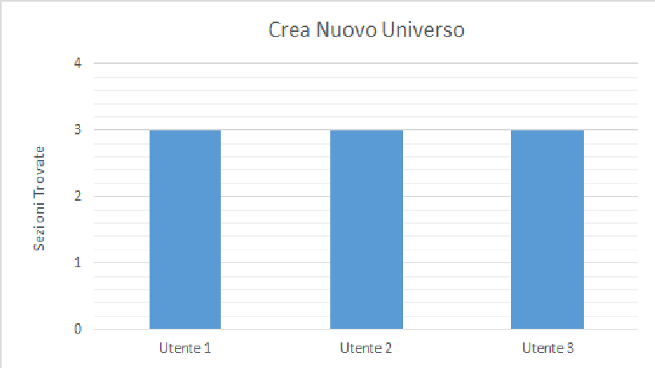

Nome del progetto e repository github
Nome del progetto: YOUniverse
Repository del sito di presentazione progetto: https://github.com/SoNet-2017/YOUniverse.git
Repository del prototipo (codice): https://github.com/SoNet-2017/YOUniverse-code.git
Membri del team
| Matricola | Cognome | Nome | GitHub | |
|---|---|---|---|---|
| 234977 | Politi | Mattia | s234977@studenti.polito.it | @Cosmopoliti |
| 242210 | Oggero | Marco | marco.oggero93@gmail.com | @bbogge |
| 241937 | Raffaele | Edoardo Vanja | edoardovanjaraffaele@gmail.com | @edoardoraffaele |
Presentazione del concept
Vision
YOUniverse è un social improntato alla scrittura e alla creazione di universi narrativi, la cui creazione ed espansione è gestita dagli utenti in modo collaborativo. Il social da completa liberta di creazione al target. Rispetto ai competitors permette una collaborazione più attiva da parte dei vari utenti che allo stesso tempo sono liberi di scegliere con chi collaborare o meno e come sviluppare il proprio universo narrativo. La principali caratteristiche sono la possibilità di creare un universo narrativo di cui si è padroni, la possibilità di espandere l'universo narrativo di altri utenti. In fine vi è la possibilità di votare in modo da creare un raking delle varie storie.
Target
Il target a cui ci riferiamo sono lettori e scrittori, principalmente un tipo di lettore che non abbia necessariamente capacità di scrittura elevate ma che abbia senso del gioco.
Personas
Daniele: 20 anni
- studente
- assiduo lettore e frequentatore di siti dedicati alla scrittura
- giocatore GdR
Stefania: 25 anni
- studentessa
- scrittrice alle prime armi
Scenarios

Stefania, scrittrice alle prime armi, vorrebbe scrivere qualcosa di nuovo ma si ritrova bloccata. Trovandosi sul sito legge una delle ambientazioni e, ispirata, decide di scrivere una storia ambientata in quell'universo come esercizio di stile.
Funzionalità e architettura
Funzionalità complete del social network
Inserire una tabella in cui sono elencate (ad alto livello) TUTTE le funzionalità del vostro social network, anche quelle che non compariranno nel prototipo.
| Funzionalità complete | Descrizione |
|---|---|
| ESPANDI | Permette all'utente di inserire una storia all'interno dell'universo narrativo |
| VOTA | Permette all'utente di valutare la storia che sta leggendo |
| CREA | Permette all'utente di creare un suo universo narrativo |
| CANONIZZA | Permette a chi ha creato un universo narrativo di rendere canoniche le storie espanse scritte dagli altri utenti |
Funzionalità dettagliate da implementare
Inserire una tabella in cui sono elencate SOLO le funzionalità del vostro social network (a basso livello) che COMPARIRANNO NEL PROTOTIPO. Inserire un riferimento alla funzionalità completa a cui fanno riferimento
Se vengono fatte delle semplificazioni inserirle in questa sezione, sotto la tabella.
| Base | |||
|---|---|---|---|
| Sign in | Registrazione al sito: richiesta di informazioni dell'utente atte alla creazione del profilo | / | |
| Log in | Accesso tramite username e password | / | |
| Tab Funzioni | Un tab sempre a vista fissato in alto con le tre aree elencate qui di seguito | ||
| Ricerca | Ricerca contenuti tramite immisione di testo | / | |
| Home | Indirizza alle pagine-copertine (Home, Trend, News, Universes) | / | |
| Profilo | Indirizza alla pagina profilo dell'utente | / | Funzionalità Utente | Di seguito sono riportate tutte le funzioni di cui può usufruire l'utente |
| Informazioni | Area in cui editare le informazioni relative all'utente (nickname, sesso, data di nascita,...) | / | |
| Interessi | Area in cui aggiungere tag di interessi dell'utente | / | |
| Diario | traccia delle azioni dell'utente sul sito | / | |
| Libreria Universi | lista degli universi a cui l'utente partecipa | / | |
| Storie | raccolta delle storie scritte dall'utente | / | |
| Palmarès | elenco degli achievements ottenibili dall'utente (a colori quelli sbloccati, in bianco e nero quelli da sbloccare) | / | |
| Immagine profilo | cliccando sull'icona del profilo è possibile cambiare immagine al profilo | / | |
| Following/Follower | numero delle persone seguite dall'utente/che seguono l'utente | / | |
| Pensiero del giorno | frase limitata (per caratteri) che rimane affissa sul profilo utente fino alla mezzanotte del giorno in cui viene scritta | / | |
| Scrivi | apre l'editor di scrittura per una nuova storia (viene richiesto in quale universo è ambientata la storia) | ESPANDI | |
| Pubblica | Presente all'interno dell'editor di scrittura, dà la conferma di pubblicazione della storia | ESPANDI | |
| Salva come Bozza | Presente all'interno dell'editor di scrittura, salva la storia nell'elenco "Storie" dell'utente senza pubblicarla | ESPANDI | |
| Modifica | Presente all'interno dell'editor di lettura, permette di modificare la storia dell'utente aprendola nell'editor di scrittura | ESPANDI | |
| Invia messaggio | apre una chat privata tra l'utente e un altro | / | |
| Crea universo | permette all'utente di creare una nuova pagina-universo (funzionalità da sbloccare) | CREA | |
| Sali di Livello per Universo | In ogni Universo l'utente ha un livello, partecipando alla vita di quell'Universo narrativo salirà di livello | / | |
| Funzionalità Universo | le funzionalità all'interno della pagina di uno specifico universo | ||
| Pubblico/Privato | Permette all'utente che ha creato quell'universo se renderlo un Universo Pubblico e quindi espandibile da tutti o Privato e quindi espandibile solo da utenti sotto suo invito | CREA | |
| ESPANDI | Cliccando sul tasto ESPANDI, presente su ogni Universo, l'utente aprirà l'editor di scrittura (Questa volta non vi sarà la richiesta dell'universo) | ESPANDI | |
| Info | Visualizza le informazioni utili sull'universo, che servono agli utenti per scrivere le storie (Ambientazione, Personaggi Chiave, Regolamento) | / | |
| Storie | Visualizza tutte le storie presenti in quell'universo (Dividendo le storie degli altri da quelle dell'utente) | / | |
| leggi | Cliccando sulla storia che si è scelto si aprirà l'editor di lettura | / | |
| Commenta | Permette di lasciare un commento alla fine della storia | / | |
| Vota | L'utente può votare a sua discrezione ogni storia che legge | VOTA | |
| Forum | Apre il Forum relativo a quell'universo | / | |
| Post di discussione sul forum | L'utente crea un argomento di discussione sul forum | / | |
| Partecipa ad una discussione sul forum | L'utente può rispondere ad un argomento di discussione gia presente sul forum | / | |
| Mappa | Visualizza la Mappa dell'universo, in modo che l'Utente possa avere un riferimento grafico | / | |
| Editor Mappa | Permette all'utente di inserire icone sulla mappa, relative ai luoghi da lui descritti nelle proprie storie | / | |
| Livello riferito all'utente | Mostra il livello dell'utente in quel dato universo. | / | |
| Funzionalità Copertine | Di seguito sono trattate 4 tipi di Home Page alle quali l'utente può accedere in ogni momento dal Tab Home | ||
| Home | Questa è l'Home Page personale dell'utente e mostra tutti i contenuti che hanno a che fare con ciò che segue l'utente (diverso dal diario) | / | |
| Trend | Questa è l'Home Page che mostra le storie e gli universi più votati e seguiti da tutta la community | / | |
| News | Questa è la Home Page che visualizza in ordine cronologico tutte le pubblicazioni | / | |
| Universes | Lista completa di tutti gli universi disponibili (In cui sono segnate le espansioni e il relativo livello dell'utente) | / |
Architettura dell'informazione

Mockup
Inserire il mockup realizzato con Balsamiq
Video
Inserire il video di "promozione" del vostro social network
Valutazione con gli utenti
Profilo degli utenti
Utenti Partecipanti: 3
- Utente 1: Uomo, 23 anni, appasionato di letteratura
- Utente 2: Donna, 24 anni, appasionata di cinema
- Utente 3: Donna, 24 anni, appasionata di musica e fotografia
Strumenti della valutazione
Per valutare la navigabilità del sito abbiamo suddiviso la navigazione sotto 4 task: Naviga Profilo, Naviga Universo, Espandi Universo e Crea nuovo Universo.
Ognuno di questi task aveva l'obbiettivo di capire se navigando senza aiuti l'utente riuscisse a scoprire o trovare diverse sezioni (4 o 5 in base al tipo di task)
Durante la navigazione l'utente ci forniva a voce informazioni ed impressioni.
Se alla fine della navigazione non erano state trovate tutte le sezioni veniva chiesto all'utente di cercarla ed in seguito ci spiegavano cosa non li avesse portati ad accorgersi della presenza di quella data sezione
Risultato della valutazione


 

Analisi critica e lavoro futuro
La maggior parte dei problemi trovati riguardavano l'intituività su cosa servissero alcuni pulsanti e dove andare per trovare alcune sezioni.
Nel quarto task nessuno dei tre utenti riusciva a trovare il tasto per creare un nuovo universo, per risolvere ciò basterà inserire il tasto in una sezione più visibile o creare un mini tutorial quando gli Utenti del sito sbloccano questa opzione.
Nel terzo task un solo utente ha avuto un solo problema dovuto al fatto che non riuscisse ad intendere il tasto "Espandi" come la funzione che permette di aggiungere e quindi creare nuove storie,
problema dovuto più che altro semantica del sito compresa più facilmente dagli altri due utenti.
Nel secondo task il secondo utente ci ha fatto notare che sarebbe funzionale se ad ogni click sulla storia il sito rimandasse direttamente al suo Universo di appartenenza.
I problemi del primo task riguardavano semplicemente uno smarrimento iniziale dovuto al fatto che gli utenti non conoscessero l'archittetura del sito.